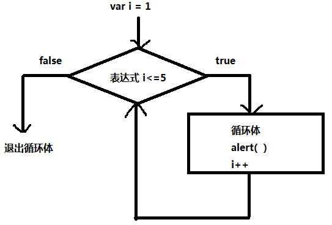

1、梳理知识点
类型转换 ：
自动转换 "9" == 8 算术运算 null undefeind
强制转换
扩展方法 isNaN eval
短路 ：
选择结构 ：
if else switch (表达式){ case 1 }
js操作页面元素
为元素添加事件
元素.onclick = function(){
......
}
2、循环结构
控制语句 ： while do..while for for..in
while结构 （当型循环） ：
while( 表达式 ){ 表达式一般是关系表达式 表示循环条件
循环体
}
循环五要素 ：
1、循环变量
2、循环变量初始值
3、循环变量终值 （循环条件）
4、循环变量增值（步长）
5、循环体（反复执行的代码）
while执行逻辑 ：

3、do...while循环
控制语句 ：
do{
}while( 表达式 ) 表达式一般为 关系表达式
执行逻辑 ：

while 和 do ... while 区别 ：
while 先判断条件 后执行循环体 ，循环体可以一次也不执行
do...while 先执行循环体 后判断表达式条件 ， 循环体 至少要执行 一次
4、for循环
控制语句 ：
for( 表达式1 ; 表达式2 ; 表达式3 ){
循环体
}
表达式1 ： 一般是为循环变量赋予初始值
表达式2 ： 一般循环变量终值（条件）
表达式3 ： 一般是循环变量的增值（步长）
执行逻辑 （同while）：

5、break 和 continue
break ：
使用场景--switch 循环体中
含义 ： 中断 在循环体中 表示 结束本层循环
continue :
使用场景-- 循环体中
含义 ： 继续 在循环体中 表示 结束本次循环 继续执行下一次循环
6、死循环
条件永远成立
7、for和while的使用场景
如果 有明确的循环次数 明确的初始值 和 终值 ，建议使用for
如果 没有明确的循环次数 建议使用 while